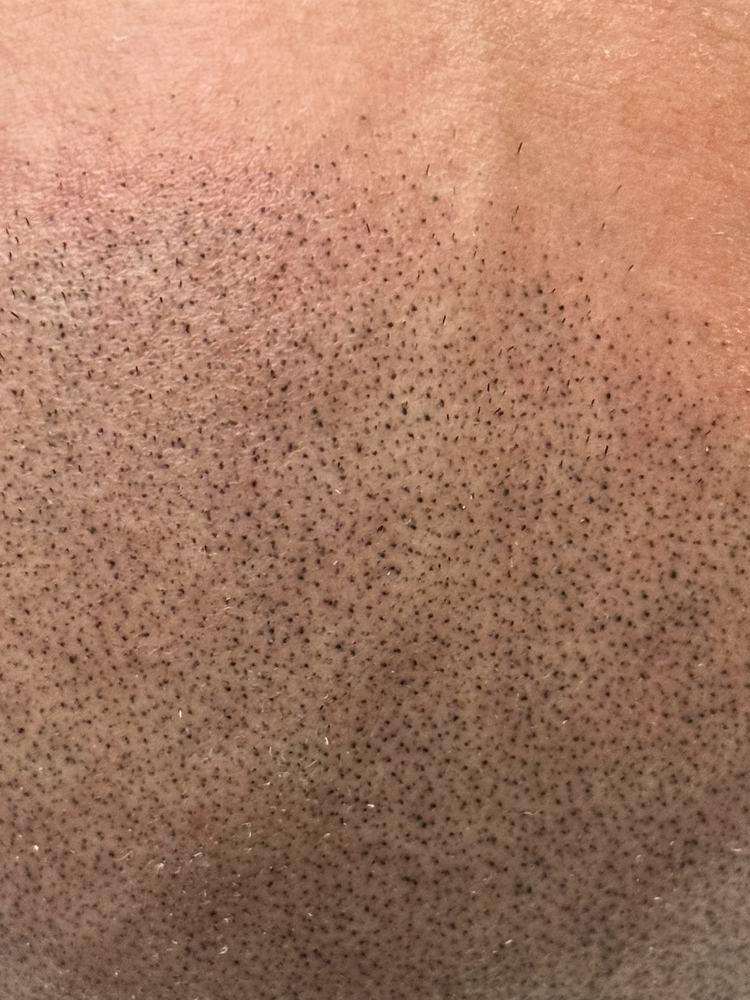
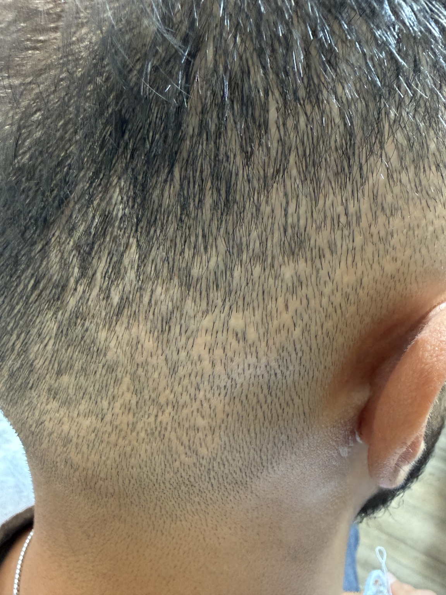
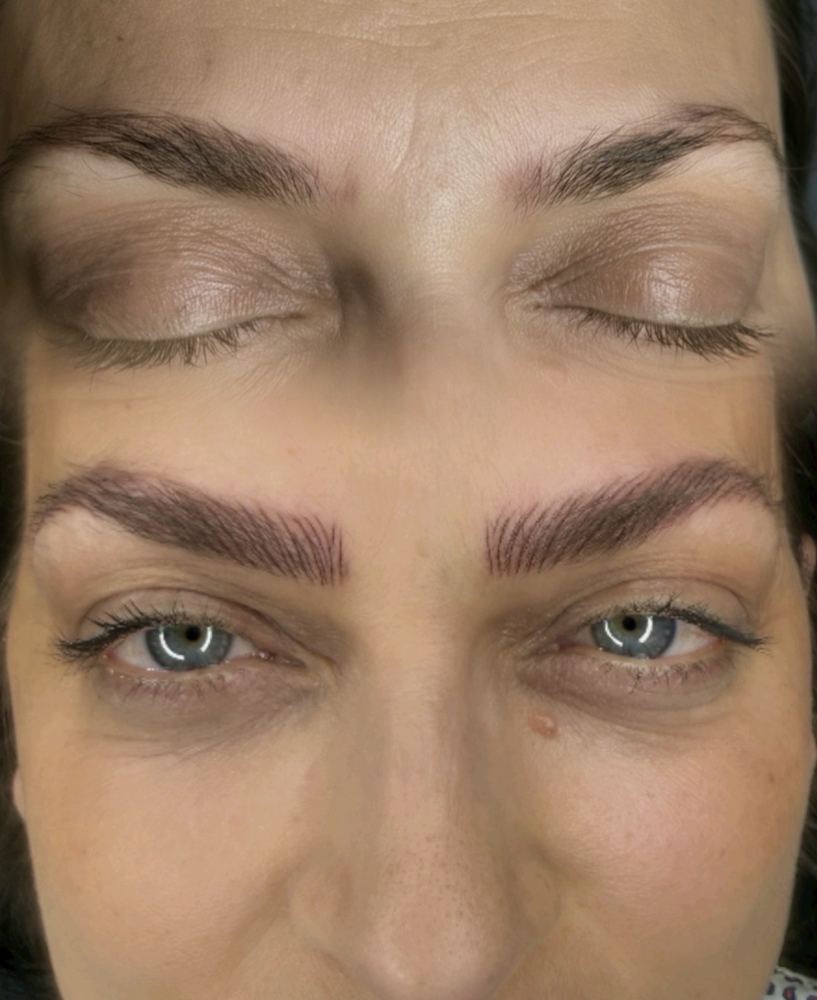
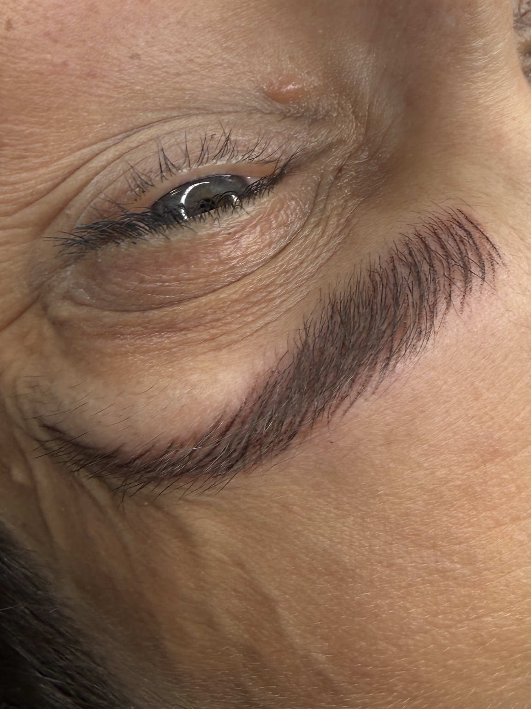
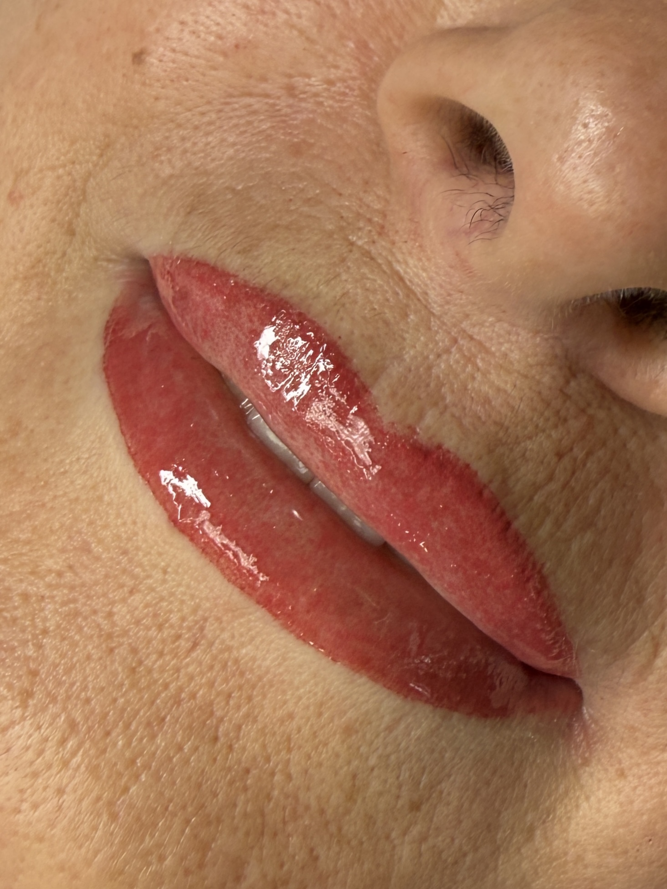
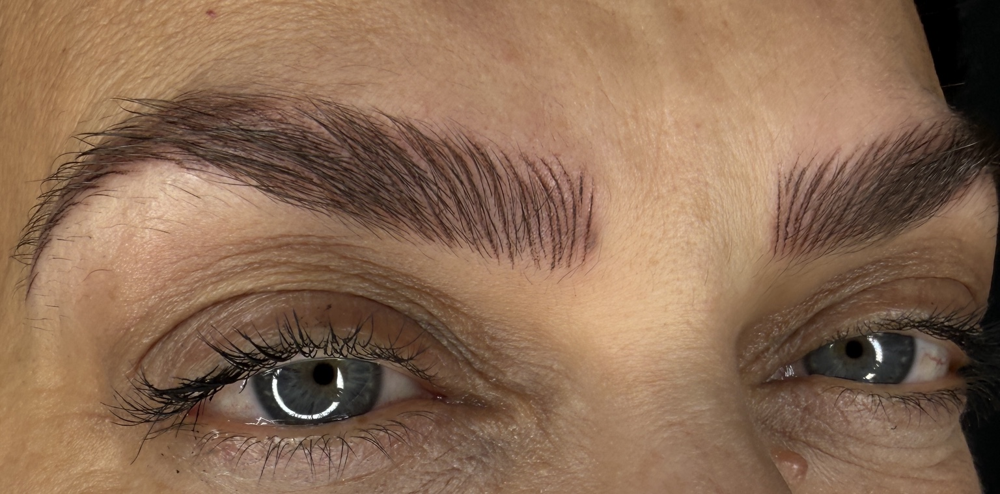
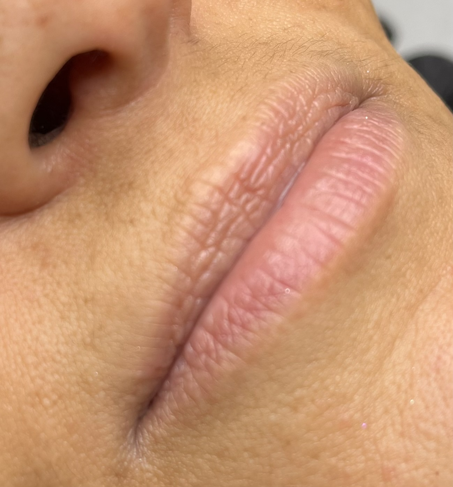

01 · Tricopigmentazione
Tricopigmentazione
Progetti personalizzati per effetto rasato, densità e camouflage estetico di esiti cicatriziali, con studio dell'hairline e delle proporzioni.
Esplora i risultatiTricopigmentazione e PMU progettati sulla persona. L'obiettivo non è trasformare: è ritrovare equilibrio, proporzione e naturalezza.
Scopri i lavoriOgni progetto nasce dalla situazione reale della persona. Osservo, progetto e solo dopo scelgo come intervenire: sul cuoio capelluto con la tricopigmentazione, sul volto con il PMU.

Progetti personalizzati per effetto rasato, densità e camouflage estetico di esiti cicatriziali, con studio dell'hairline e delle proporzioni.
Esplora i risultati
Sopracciglia, occhi e labbra: interventi costruiti per valorizzare il volto senza cancellarne l'identità.
Esplora i risultatiHairline, forma del cranio, distribuzione residua dei capelli e obiettivo estetico vengono valutati insieme. Nessuna linea standard: il progetto deve appartenere al volto e alla persona che lo indosserà.



Progettazione hairline · dettaglio densità · risultato. Ogni caso viene valutato individualmente.

I trattamenti PMU sono presentati separatamente dalla tricopigmentazione. I nomi dei trattamenti restano quelli del catalogo AUREALE; nel portfolio descrivo l'effetto realizzato sul singolo caso.
Effetto pelo, sfumature, definizione dello sguardo e lavoro sulle labbra vengono progettati in funzione dei lineamenti e della base naturale.





Le fotografie documentano casi individuali. I risultati possono variare in base alla situazione di partenza, alla cute e al percorso concordato.
“Il trattamento giusto non parte dalla tecnica. Parte dalla persona.”
La consulenza viene prima del preventivo. Serve a osservare la situazione di partenza, capire l'obiettivo e verificare cosa sia realisticamente ottenibile.
Solo dopo vengono definiti progetto, trattamento e percorso. Nella tricopigmentazione il numero di sedute e gli eventuali mantenimenti vengono stabiliti sul singolo caso.
Simona Reale
Specialista in tricopigmentazione
AUREALE | TRICOPIGMENTAZIONE
Prenotazioni e informazioni:
DM o WhatsApp
392 2504898
Roma Flaminio
Scrivimi su WhatsApp